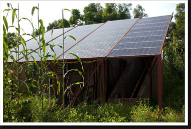
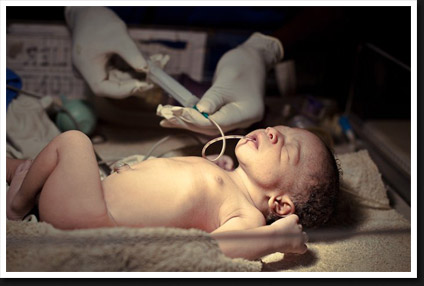
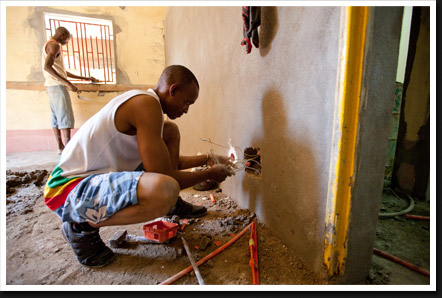

Energy is essential to economic development because people need more than food, water and shelter. With energy people can empower their communities and transform their societies.
Human prosperity has always been dependent on our ability to capture, collect, and harness energy. Early ways of harnessing energy such as the control of fire and domestication of plants and animals enabled the first civilizations to form. These civilizations also used energy in the form of biomass for cooking, heating, and for the creation of bricks, bronze, iron and other materials. The relative wealth of all past civilizations has always been inextricably tied to the access and control of energy as measured by the amount of human, animal, plant, and fossil fuel energy available to the society. The vast amount of energy used today is the principal reason why millions of people in the developed world have such a high standard of living. A human being needs between 2,000 - 3,000 kilocalories per day to survive. However, the U.S. energy consumption per person is about 230,000 kilocalories per day.
Currently, the way we consume most of this energy is not sustainable. Our heavy dependence on fossil fuels is rapidly degrading local, regional, and global environments. We need to develop more sustainable energy solutions in order to raise the standard of living for poor people all over the world and for the developed world to enjoy a high standard of living for generations to come.

Modern, effective healthcare services are lacking in most of the developing world today. Many countries simply do not have the energy services required to make use of the medical technologies and procedures that improve  healthcare. Hospitals and clinics need power to provide patients with the benefits of modern medicine and a higher quality of life.
Few electric grids exist in developing nations, and those that do are often subject to blackouts, shortages, and other reliability issues. There is still a high demand for access to the grid and as result, electricity is very expensive. Healthcare facilities have extremely high utility bills and they also have to pay for back-up generators and fuel. The lack of access to reliable energy services is the main barrier to bringing effective healthcare where it is needed most.
By working to provide localized, renewable energy systems, The World Energy Project enables hospitals, clinics, and treatment centers to adequately care for a community. The impacts of having a consistent energy supply are far-reaching.
Reliable energy systems are needed for:
- Providing essential lighting in operating rooms. Modern surgeries and treatments cannot be done if the lights suddenly go out during an operation.
- Storing and refrigerating medicines and vaccines. Very basic medicines, such as antibiotics, insulin, vaccines, etc. can be deployed in the developing world, but these life-saving supplies go to waste if they cannot be stored effectively.
- Powering modern medical equipment. These medical technologies and tools have proven to be extremely effective in diagnosing, treating, and preventing the health complications that exist in the developing world.
- Healthcare facilities’ energy costs will be lowered significantly, allowing them to budget for better equipment, facility upgrades, more staff, and expanding quality services to its patients.
In addition, over 2.4 billion people use use charcoal, coal, firewood, crop residues, or animal dung as their primary cooking fuel. Using these fuels in poorly ventilated areas is a major health issue in the developing world. Exposure to smoke from household cooking results in over 1.6 million (1 milllion are children) deaths worldwide every year. Sustainable, renewable energy systems would both prevent many harmful emissions from being produced in the first place, and also provide energy for hospitals to better treat complications resulting from inhaling those emissions.
Education is absolutely fundamental to economic, social, and personal development. A well educated community is empowered with the necessary knowledge and skills to develop and improve their lives. Unfortunately, millions of women and children in the developing world are unable to complete a primary education. A key underlying cause to this education shortfall is lack of access to modern energy services.
Scarce energy resources and services means women and children have to spend more time doing basic survival activities. Without basic energy services, more time is required to collect fuel, fetch water, cook, and do agricultural work. By simply introducing basic mechanical power for grinding, pumping, and threshing work, many more women and children are able to attend school. Investments in energy infrastructure greatly benefit the entire community because the energy services reduce a community’s dependence on the labor of women and children.
Another important underlying problem to the education problem is the lack of qualified teachers. Improved energy services can also play a huge role in addressing this issue. Electricity and Internet access can provide access to nearly unlimited educational material, distance learning services, and further education for teachers. New teachers in rural areas can be trained from distant locations, but only if modern energy services are available to reduce time spent on basic survival activities and enable the teachers to connect to distance learning services.
Access to energy can greatly improve existing educational institutions in the developing world. Electricity can provide adequate lighting for study and enable the use of educational media, communication tools, and information technologies. Electricity and Internet enable students and teachers to have access to the world’s wealth of knowledge, regardless of their location.
Sustainable energy systems benefit local, national, and global economies in many ways:
- Clean energy systems create jobs directly because they require workers to install, maintain, and develop the systems.
- Several employment opportunities are also created indirectly by the implementation of modern, reliable energy services. They enable businesses to operate beyond daylight hours, produce products more efficiently, and employ more workers. The overall productivity and quality of a business is greatly improved with modern energy resources. 
- A country can greatly improve the stability of its economy by installing localized, renewable energy systems. They diversify a country’s energy sources and provides a bulwark against the supply shortages and price volatility of conventional energy markets.
- Electricity is needed for connecting to the Internet. Having access to the Internet alleviates poverty because businesses within the community are better able to get their products and services to the rest of the world. Wealth is able to flow into a community that would not be possible without electricity to access the Internet.
Many economies of developing countries are restricted from growing because the majority of their population participates in subsistence farming. Abundant energy services and energy intensive technologies are what have enabled the developed world to produce such large quantities of food with relatively few farmers. A single farmer in the U.S. can plow, irrigate, and plant fields, apply fertilizer, and harvest their crops that feed thousands of people solely due to modern energy services. Citizens and governments cannot even begin to work towards true economic development if they are struggling to feed themselves.
Localized, renewable energy systems have the potential to vastly improve agricultural production while also limiting the negative environmental impacts that have resulted from agricultural practices in the developed world. Sustainable energy systems can be utilized to more efficiently grow, harvest, and process crops and, in turn, reduce the number of people needed for farming. These people are then able to pursue other jobs to diversify and strengthen their economy.